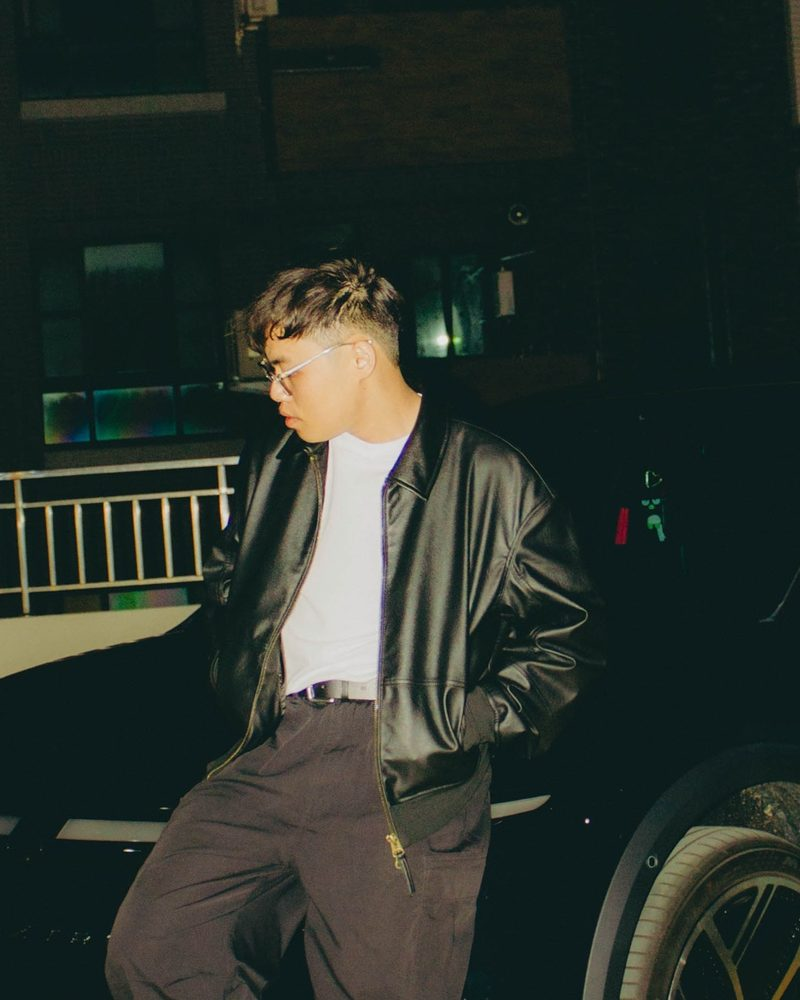

軟體工作室 · 台灣
從零開始，構築好用的軟體。
小而好用的 iPhone App，把生活裡的小事做好。
iOS · 免費 · 已上架
廁略
找到最近、而且能借的廁所。
iOS · Apple Watch · 已上架
小日子
在一起的每一天，都算數。
iOS · iPad · 網頁 · 已上架
揪一桌
一支手機開桌，朋友用網頁就能加入。
App Store 搜尋「揪一桌」了解更多
主理人
郭泓毅
在晶圓廠做自動化，也做生活裡的小 App。

名字的由來
Ø 是零，構 是結構。
從零開始想誰在用，再把看不見的結構蓋穩。